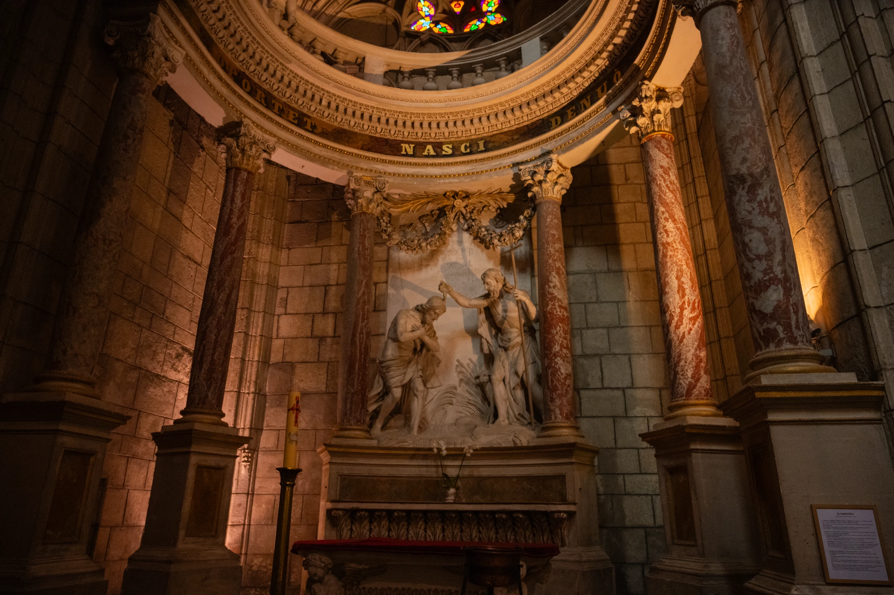
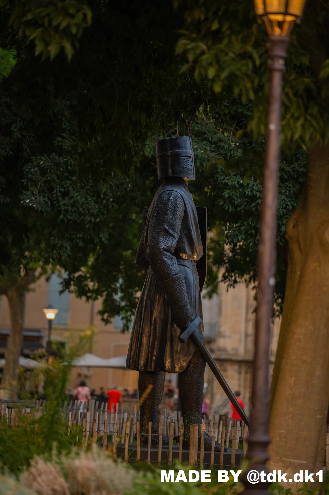

LE TERRAIN POUR ORIGINE. LE CINÉMA POUR LANGAGE.
AU PLUSPRÈS DURÉEL.
Aller voir.
Prendre le temps.
Raconter ce qui reste.
CINÉMA INDÉPENDANT
PHOTOGRAPHIE
LES PIEDS SUR LE TERRAIN.
LES YEUX GRAND OUVERTS.

JE NE CHERCHE PAS
À EMBELLIR
LE MONDE.
JE CHERCHE À
LE REGARDER.
Le reportage m’inspire l’écoute et le goût du terrain. Le cinéma, le sens du cadre et de la lumière. Entre les deux, je cherche une manière personnelle de raconter les lieux, les gestes et les instants.
Je suis Théo, étudiant à l’IUT de Béziers et passionné de création audiovisuelle. Entre Béziers et Montpellier, je développe un regard entre photographie, récit de terrain et langage cinématographique.
LE MONDE.
À HAUTEUR
D’HUMAIN.
PHOTOGRAPHIES TDK / SIGNATURES ORIGINALES CONSERVÉES
LE GESTE.
LE MOUVEMENT.
LE RÉEL.
EN MOUVEMENT.
PUBLICATION : @kvb_vegetalfood
Lancez la lecture dans le lecteur. Si Instagram demande une connexion, la publication originale reste accessible.
S’ÉLOIGNER
DU BRUIT.
Lever les yeux. Regarder entre les branches.
Retrouver la ville autrement.
L’INSTINCT.
ET LA
PRÉCISION.
Un dispositif léger. Une intention claire.
La technique au service de la présence.
DU TERRAIN AU MONTAGE.
UNE ÉCRITURE EN MOUVEMENT.
01AVANT L’IMAGE.
Écouter votre histoire. Comprendre les enjeux. Repérer les lieux, rencontrer les personnes et construire une intention juste.
RECHERCHE / REPÉRAGE / ÉCRITURE02AU CŒUR DU RÉEL.
Une présence discrète et une image précise. Composer avec la lumière disponible, capter les gestes, enregistrer les voix et garder une place pour l’imprévu.
CADRAGE / LUMIÈRE / PRISE DE SON03CE QUI RESTE.
Trouver le rythme du récit, travailler les silences et les couleurs. Du montage à la livraison, préserver le sens et la singularité de chaque image.
MONTAGE / SOUND DESIGN / ÉTALONNAGE01 / IMAGE
Nikon Z 7
NIKKOR Z 24-70mm f/4 S
NIKKOR Z 70-180mm f/2.8
02 / SON
DJI Mic 3
03 / LUMIÈRE & ATMOSPHÈRE
NEEWER CB60B · LED bicolore 70 W
Softbox NEEWER NS35P · 90 cm
2 panneaux LED Niceveedi · 36 W
Pied lumière NEEWER ST-200
Machine à fumée beamZ S700 · 700 W
IL Y A UNE
HISTOIRE ICI.
Une rédaction. Une marque. Une association.
Ou simplement une histoire qui mérite d’être racontée.
BÉZIERS ↔ MONTPELLIER